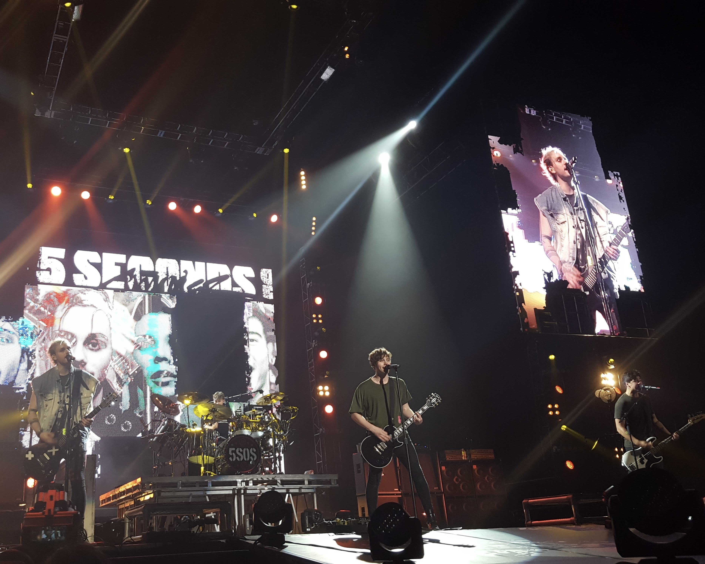
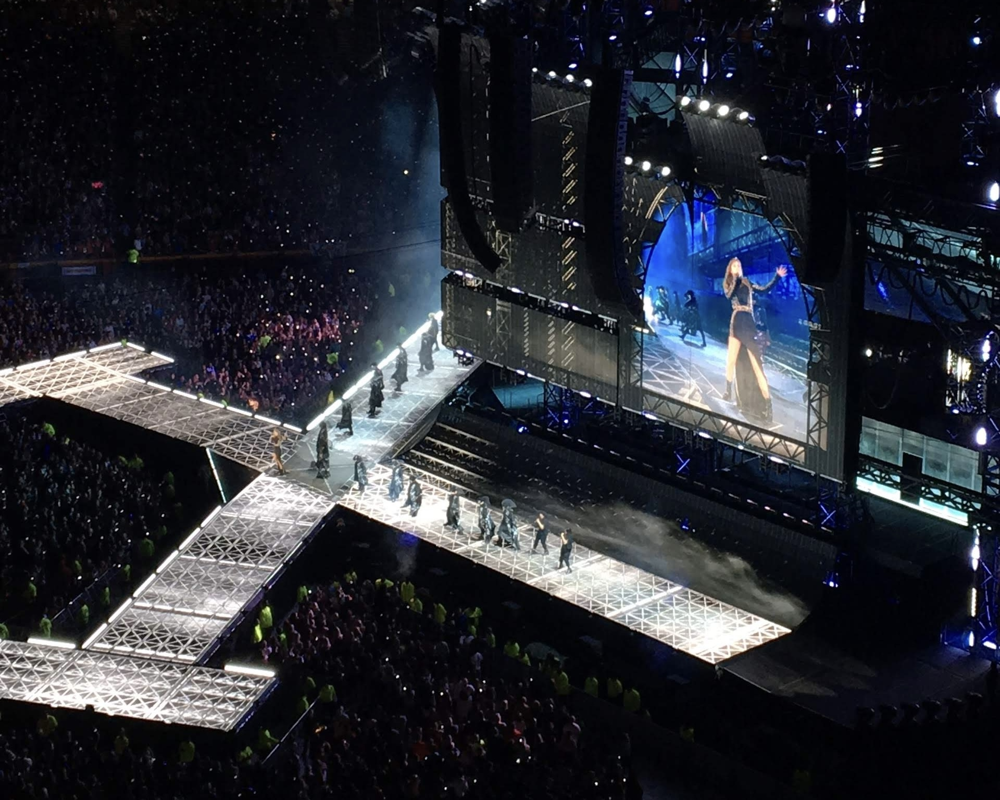
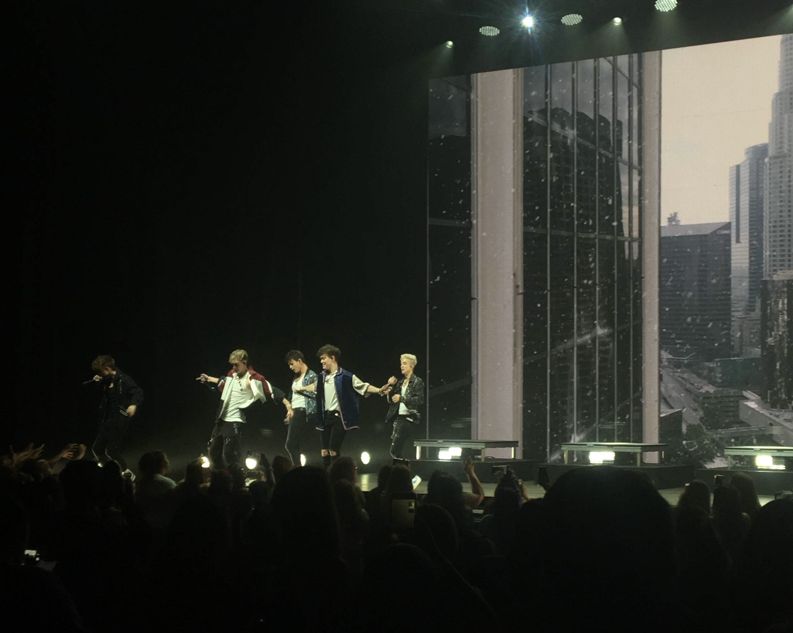
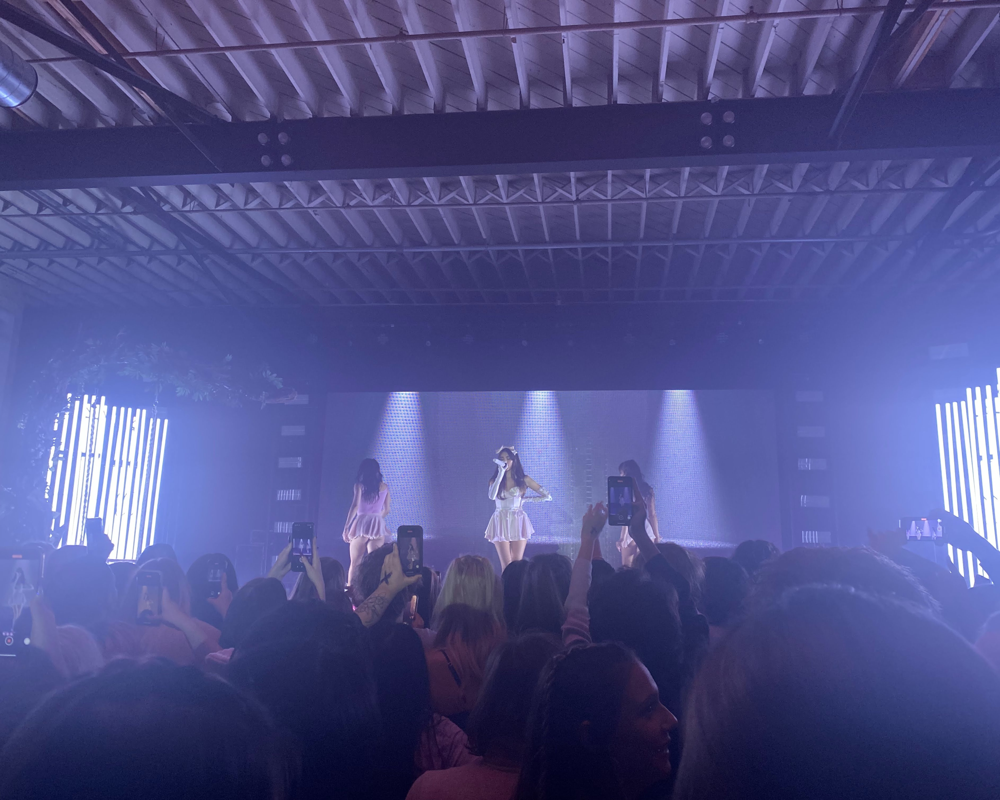
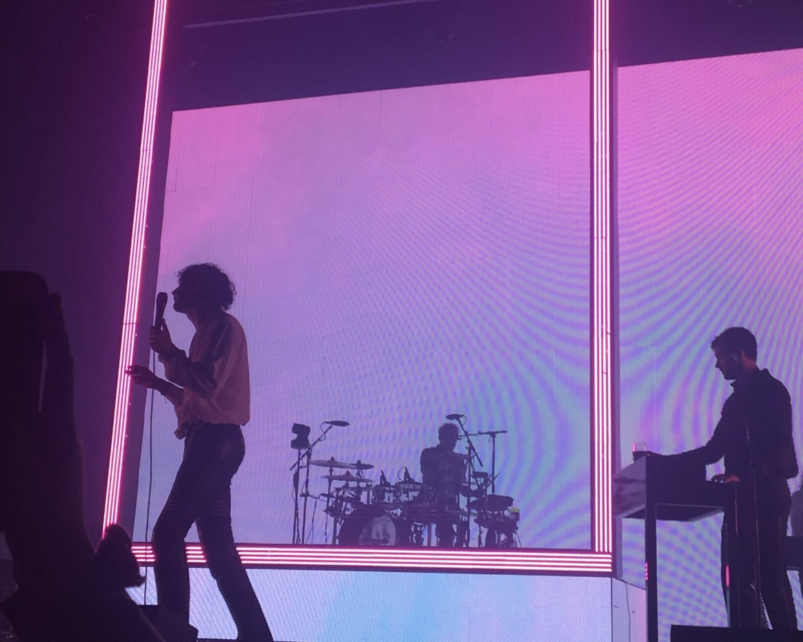
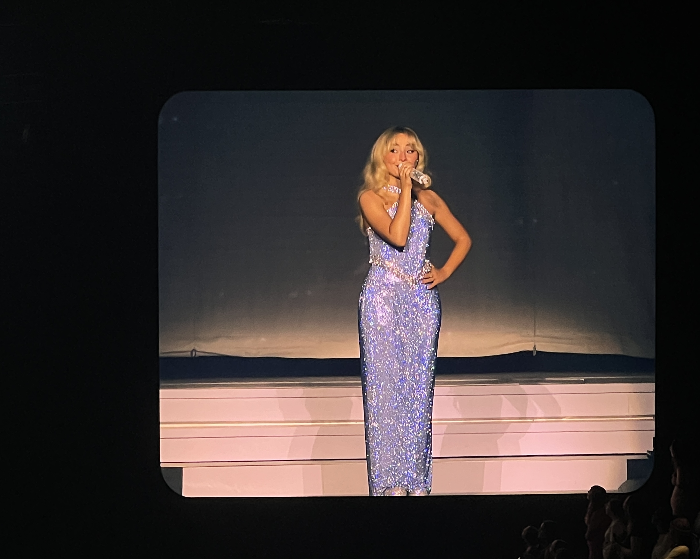

All of my pictures are ones I have taken at different concerts I have been to. During my lifetime, I’ve been to 35 concerts, making them a big part of my life and my story. It’s my favorite hobby, and I love documenting every show I go to.

This is a photo I took at the 5 Seconds of Summer concert in 2016. This was my favorite band growing up, and the first time they had ever performed in my hometown. This was also the first concert I had barricade seats for, making it very near and dear to my heart.

This photo was from the first time I saw Taylor Swift, which was a really significant milestone in my concert going journey. Taylor was the first artist I became a fan of as a kid after being shown her music by my dad. I had always wanted to go to one of her shows growing up, but tickets were hard to come by. I finally saw her in 2018 at the Reputation Stadium Tour.

I traveled to St. Louis in the summer of 2019 to see the boyband Why Don’t We during their prime years in the music industry. However, I had broken a vertebrae in my neck earlier that month, resulting in my neck brace being the star of the show when it came to my outfit. This showed my friends how serious I was when it came to concerts, and how I wouldn’t miss one for the world.

This photo was taken in 2021 at Madison Beer’s concert in Kansas City. It was the first concert I had ever attended with my best friend. We also met Madison after the show, making it a night to remember.

This photo was taken the third time I saw The 1975 (pictured) live. In total, I have seen the band five times. This night, there was a tornado warning and every fan was shoved in the same 20 x 20 foot bathroom (it was an outdoor venue). It showed me how dedicated these fans were, and I made some friends out of it!

This picture was taken at the most recent show I attended in October of 2024. I traveled to St. Louis University to see Sabrina Carpenter. These were by far the most expensive tickets I have ever bought, but they were worth every single penny.